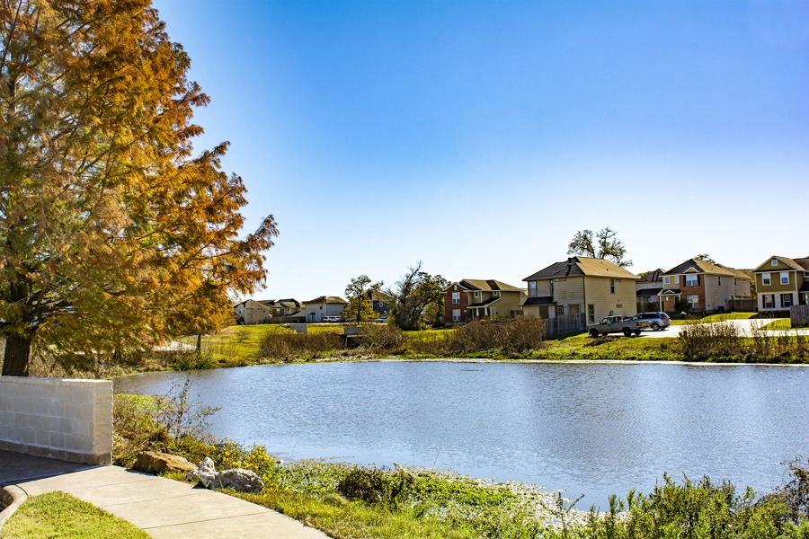

DESK / 00 / HOME
What can we help you with?
Association management and homeowner support in Bryan–College Station. Start with what you need to do.
LOCAL OFFICECollege Station, TX
01 — QUICK ACCESSCOMMON REQUESTS
Get something done.
A1Owner accountPayments, account information and homeowner access through Vantaca↗
A2Architectural requestRequest review of a proposed exterior change↗
A3Resale certificateOrder transaction-related association documents↗
A4Contact the officeQuestions for our local team→
EXTERNAL ACCOUNT OPERATIONS OPEN THE CURRENT SYSTEM. THE PREVIEW DOES NOT HANDLE PAYMENTS OR PRIVATE DATA.
02 — NEIGHBORHOODS22 LISTED
Find your community.
- 01Briar Meadows Creek
- 02Carini Townhomes
- 03Carriage Hills
- 04Cat Hollow
- 05Copperfield
- 06De Lee Street
- 07Dove Landing
- 08Estates at River Run
- 09Park Hudson
- 10Park Meadow
- 11Park Village
- 12Shirewood 4 & 5
- 13Shirewood-Rosewood
- 14Southern Trace
- 15Stone Forest
- 16Stonebridge
- 17Sun Meadows
- 18Westwood Estates
- 19The Cottages at Williams Creek Lake Estates
- 20Williams Gate
- 21Wolf Pen Creek
- 22Woodland Hills
PHOTO RECORD / BCSReal places. Real neighborhoods.EXPLORE THE RECORD ↗




03 — OUR WORKWHAT WE MANAGE
Management is in the details.
M01
For boards
Financial records, meetings, compliance, vendor coordination and ongoing association operations.
ASSOCIATION SERVICES ↗M02
For developers
Help establishing community processes and preparing associations for homeowner leadership.
DEVELOPER SERVICES ↗05 — QUESTIONS & REQUESTS